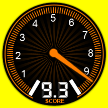
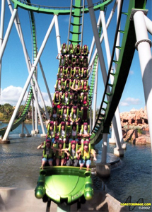

INCREDIBLE HULK
<<< back to ISLANDS OF ADVENTURE
SPECS
Max Height: 110 ft.
Max Speed: 67 mph
Inversions: 7
Duration: 2 min. 15 sec.
Manufacturer: Bolliger & Mabillard
REIVEW
Hulk starts out with a seemingly normal chain-lift, but then about ¾ the way up, it launches the riders out of the lift tunnel. Easily the best part of the ride, you flip out of the lift hill into a boomerang and then a large loop. Then after that I have a problem with the ride. It seems to slow down, and I remember just being bored with it for the 2nd half. But I think that the unique beginning still makes this ride a good one despite the mediocre ending.